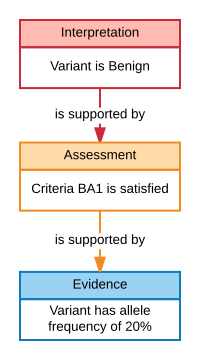

Introduction
So you've got a variant pathogenicity interpretation, and you want to share it with the world. Great, but how do you do that? The answer is simple - you write your interpretation in a well-defined, machine-readable message and you send it to somebody. Because the message is well structured, following a particular set of rules, that person will be able to understand your message unambiguously. This page will show you the basics of creating one of these messages.
The Interpretation
Suppose that we are interested in the variant NC_000017.11:g.43092919G>A, which is a missense variant in the BRCA1 gene, and you've determined that this variant is benign. This assertion is expressed by creating a VariantPathogenicityInterpretation object, expressed in JSON-LD:
(Here, I think I'd like 2 columns. On the right is the following JSON code box:
{
"@context": "http://datamodel.clinicalgenome.org/interpretation/json/context"
"id": "EXAMPLE:001",
"type": "VariantPathogenicityInterpretation",
"variant": "CAR:CA001721",
"statementOutcome": {
"id": "LOINC:LA6675-8",
"label": "Benign"
},
"description": "NC_000017.11:g.43092919G>A is benign (because it has a high population frequency)"
}
On the left, this list, either lined up with the JSON rows, or pointing to them or something?
- A JSON-LD context, which maps attribute names to identifiers
- An identifier for the interpretation
- The type in the interpretation model that this JSON node represents.
- A variant identifier: This is the variant that we are interpreting.
- The outcome of the interpretation
- A human readable description of the interpretation
– Now back to normal text —
Even this simple statement shows off a few features of the model:
- We use identifiers for many objects, including interpretations. This lets you refer to this interpretation later.
- It is valid to include either an identifier for an object, or a full representation of the object. For instance, we represent the variant with an identifier from the ClinGen Allele Registry, which we could dereference to obtain a fuller representation. We could also have included that representation inline - it's up to you and the receiver of the message to decide what you prefer.
- We use controlled vocabularies, defined in ValueSets for many terms, such as "Benign".
- Objects in the model can always have a human readable description.
- The model is serialized in JSON-LD, so we have a context file. Unless you are interested in transforming a message to RDF, you can can probably ignore this, but it will be helpful in integrating these interpretations with messages from other sources.
Show Your Work: The CriterionAssessment
Our example interpretation does a pretty good job of getting across the what of an interpretation: this variant is benign. It's not very good, though, at explaining why we think so. We've added a little note to our description field, but it's just that - some text a human can read, but not something that they're guaranteed to understand, and certainly not something that a machine can process.
An interpretation is the outcome of structured reasoning applied to evidence. In this example, the interpretation of benign was generated with the process described in the ACMG/AMP Pathogenicity Guidelines. This guideline, and others like it, lay out a set of criteria that can be applied. Each criterion can be satisfied or not, and each satisfied criteria provides support for or against an interpretation.
Specifically, the variant in our example satisfied criteria BA1: "Allele frequency is >5% in Exome Sequencing Project, 1000 Genomes Project, or Exome Aggregation Consortium", and we now want to express that in JSON-LD:
–back to the two columns–
right:
{
"id": "EXAMPLE:002",
"type": "CriterionAssessment",
"variant": "CAR:CA001721",
"criterion": {
"id": "SEPIO-CG:99038",
"type": "VariantPathogenicityInterpretationCriterion",
"label": "BA1",
"description": "Allele frequency is >5% in Exome Sequencing Project, 1000 Genomes Project, or Exome Aggregation Consortium",
"usageNotes": "Several groups have lowered the BA1 threshold (e.g. PTEN-1%). Also the sequence variant interpretation group is working on a modified version of this guideline including the minimum # of alleles that need to be examined and the population stratification effects, if any.",
"defaultStrength": {
"id": "SEPIO:0000325",
"label": "Benign Stand Alone"
}
},
"statementOutcome": {
"id": "SEPIO:0000223",
"label": "Met"
}
}
left:
- The identifier of this CriterionAssessment
- The type of this object
- The identifier of the variant being assessed
- The criterion being used to assess the variant
- the outcome of the assessment –back to the regular–
In this JSON-LD snippet, we are expressing the idea that variant "CAR:CA001721" met the criteria in "SEPIO-CG:99038", which is the identifier for the rule labeled "BA1". Here, we have included a full JSON-LD representation of the criterion, but this could also be replaced with just the id "SEPIO-CG:99038" for conciseness. Note that unlike the CriterionAssessment or criterion, the values for defaultStrength and statementOutcome do not contain a "type". These are examples of values that lack any structure, but are simply identifiers.
Show Your Work 2: The Evidence
We now know that our Variant Pathogenicity Interpretation is supported by a Criterion Assessment. But the Criterion Assessment is just another assertion; how do we know that it is true? What Evidence supports it? The Variant Pathogenicity Interpretation model contains a wide variety of evidence types that can be used to support assessments. For instance, meeting BA1 requires a high allele frequency. So the measured allele frequency is evidence that BA1 is met:
—– Two columns: Left:
- The identifier of this frequency statement
- The method used to create the sample in which the frequency was measured
- The ancestral background of the people in the sample
- The allele
- The frequency of the allele in the sample
Right:
{
"id": "EXAMPLE:003",
"type": "PopulationAlleleFrequencyStatement",
"ascertainment": {
"id": "SEPIO:0000409",
"label": "gnomAD ascertainment method"
},
"population": {
"id": "SEPIO-CG:98001",
"label": "Combined"
},
"allele": "id": "CAR:001721",
"alleleFrequency": 0.41,
}
—— One column
In English, the allele has a 41% allele frequency in the combined gnomAD population. The PopulationAlleleFrequencyStatement has many optional attributes, like the number of chromosomes sampled, the number that have the allele, number of homozygotes, and so on. These are useful attributes, but we have omitted them for this section.
Putting it all together
Some users may want to include only a subset of this information, but the true power of this model lies in its ability to encompass the entire evidence chain in a flexible and extensible way. Typically, we envision sending a message that combines all of this information as depicted here:
— two columns
Left: 
Right:
{
"@context": "http://datamodel.clinicalgenome.org/interpretation/json/context"
"id": "EXAMPLE:001",
"type": "VariantPathogenicityInterpretation",
...
"evidenceLine":[
{
"evidenceStrength": {
"id": "SEPIO:0000325"
"label": "Benign Stand Alone"
}
"evidenceItem": [
{
"id": "EXAMPLE:002",
"type": "CriterionAssessment",
...
"evidenceLine":[
{
"evidenceItem":[
{
"id": "EXAMPLE:003"
"type": "PopulationAlleleFrequencyStatement",
...
}
]
}
]
}
]
}
]
}
—— one column
The structure of this message is pretty simple: Our interpretation (EXAMPLE:001) is the root of the message. It contains an EvidenceLine, which in turn contains, as an evidenceItem, the CriterionAssessment (EXAMPLE:002). Through the same EvidenceLine mechanism, the assessment contains the evidence item that supports it, namely the allele frequency (EXAMPLE:003).
The important part here is that supporting evidence is not directly connected to the supported statement, but is attached via an EvidenceLine. The reason for this is discussed later, but you can get a hint by noticing that the strength of the assessment in supporting the interpretation is not part of the interpretation or the assessment, but of the evidence line.
Next Steps
By now, you should have a pretty good idea about the main classes in the interpretation model and how they fit together. But there's still lots of exciting details to plumb! To learn about tracking provenance, value sets, alleles, SEPIO, and many other topics, you can continue on to the more detailed documentation and the FAQ. Alternately, you can browse the class hierarchy, the examples, or some of the projects based on the model.